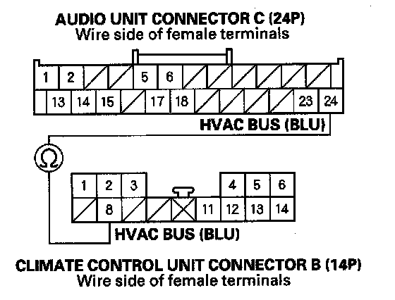
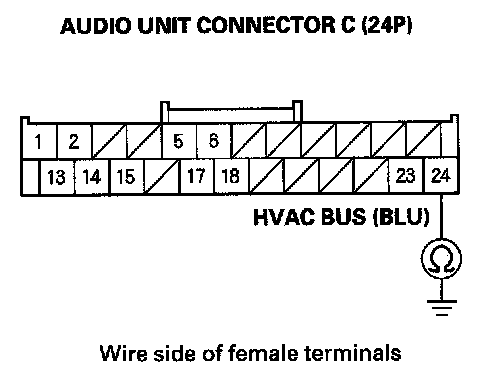
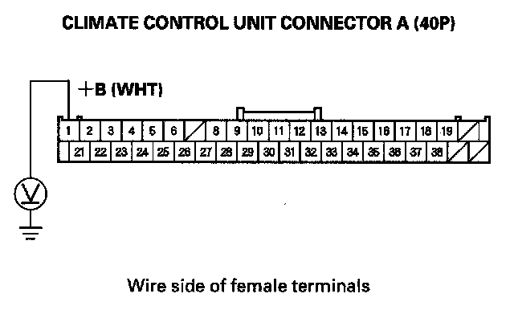
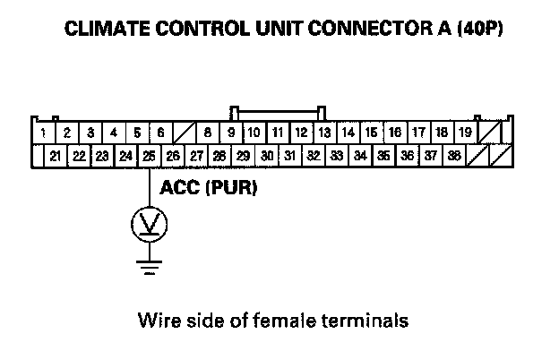
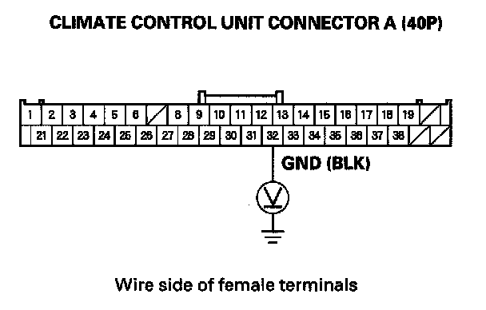

Display Does Not Dim or Brighten With Dimmer
Display does not dim or brighten with dimmerNOTE: Always check the connectors for poor connections or loose terminals.
1. Turn the ignition switch ON (II).
2. Turn the headlight switch to the parking or headlight on position.
3. Check the display of the climate control unit
Does the climate control illumination change with dimmer?
YES - Go to step 4.
NO - Go to climate control power and ground circuit troubleshooting.
4. Check the No. 7 (10 A) fuse and the No. 32 (10 A) fuse in the under-dash fuse/relay box.
Are the fuses OK?
YES - Go to step 5.
NO - Replace the fuse, and recheck.
5. Remove the audio unit. Check that the audio unit and climate control unit connectors are properly connected.
Are they connected properly?
YES - Go to step 6.
NO - Repair poor connections and reconnect the connector, and recheck the function.
6. Turn the ignition switch OFF.
7. Disconnect audio unit connector C (24P) and climate control unit connector B (14P).

8. Check for continuity between the audio unit connector C (24P) No. 24 terminal and climate control unit connector B (14P) No. 8 terminal.
Is there continuity?
YES - Go to step 9.
NO - Repair open in the wire between the audio unit connector C (24P) No. 24 terminal and climate control unit connector B (14P) No. 8 terminal.

9. Check for continuity between the body ground and audio unit connector C (24P) No. 24 terminal.
Is there continuity?
YES - Repair short to body ground in the wire(s) between the audio unit and climate control unit.
NO - Go to step 10.
10. Disconnect climate control unit connector A (40P).

11. Measure the voltage between No. 1 terminal of climate control unit connector A (40P) and body ground.
Is there battery voltage?
YES - Go to step 12.
NO - Repair open in the wire(s) between No. 7 (10 A) fuse in the under-dash fuse/relay box and the climate control unit.
12. Turn the ignition switch ON (II).

13. Measure the voltage between No. 25 terminal of climate control unit connector A (40P) and body ground.
Is there battery voltage?
YES - Go to step 14.
NO - Repair open in the wire(s) between the 32 (10 A) fuse in the under-dash fuse/relay box and the climate control unit.
14. Turn the ignition switch OFF.
15. Reconnect the audio unit connector A (17P).
16. Turn the ignition switch ON (II).

17. Measure the voltage between climate control unit connector A (40P) terminal No. 37 and body ground.
Is there less than 0.1 V?
YES - Substitute a known-good climate control unit, and recheck. If the symptom/indicated goes away, replace the original climate control unit. If the symptom is still present, substitute a known-good audio unit and recheck. If the symptom/indicated goes away, replace the original audio unit.
NO - Repair open in the wire between the climate control unit connector A (40P) terminal No. 37 and body ground (G506).